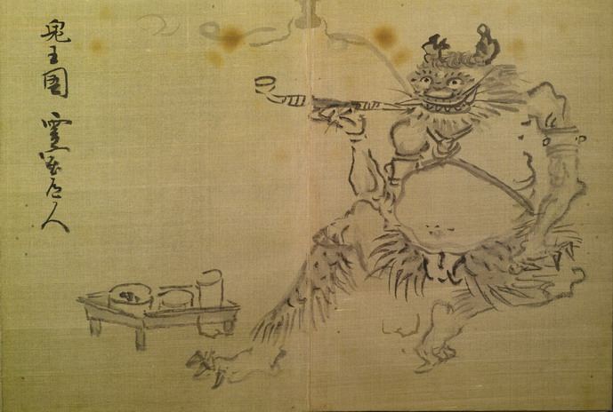

鬼。太くねじれた2本の角を頭に生やし、目玉は丸く、口には鋭い歯が生えている。頬から顎にかけてひげが生えている。腕輪と胸飾りを身につけ、褌を締めて、臑には毛皮の脚絆を着けている。足指の爪は鋭い。腰を下ろして、煙管をくわえ、口から煙をたなびかせている。足元には、食器が載った膳が置かれている。
著作者：鬼王園霊室道人／出典：親書誌：U426_nichibunken_0155：東都画家妖怪画帖；トウトガカヨウカイガチョウ／日付：2010／資源識別子：U426_nichibunken_0155_0003_0000
Copyright (c)2010- International Research Center for Japanese Studies, Kyoto, Japan. All rights reserved.